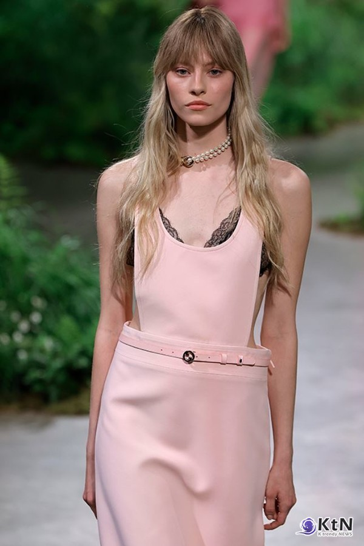
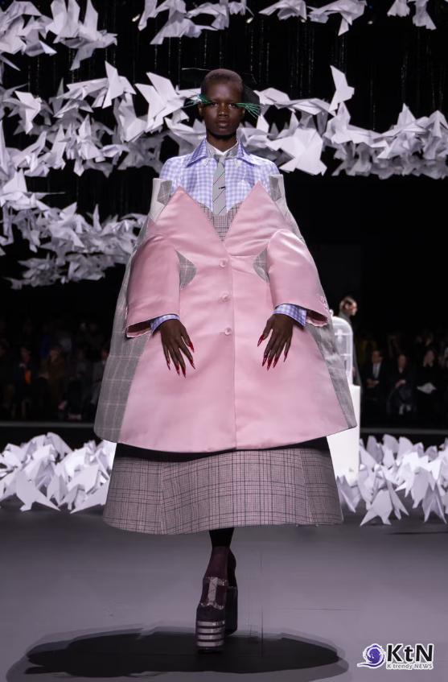
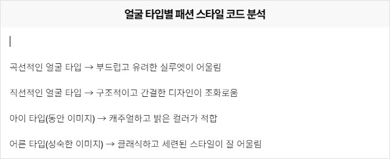
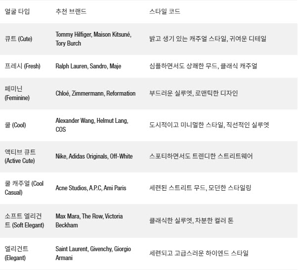
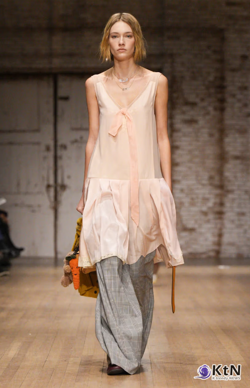
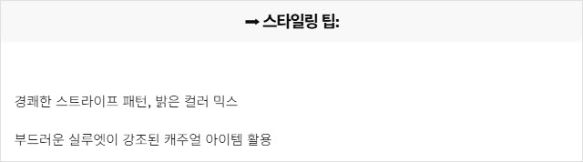
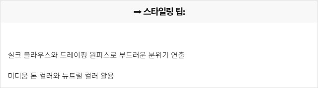

CMK NEWS
| 제목 | [패션 리포트] 나에게 맞는 패션 브랜드 찾기 - 얼굴 타입별 스타일 가이드 |
|---|---|
| 작성자 | 관리자 |
| 등록일 | 2025-02-20 |
| 조회수 | 8313 |
|
✔ 패션 브랜드 선택, 얼굴 타입이 결정한다 – 내게 가장 잘 어울리는 스타일을 찾는 법  구찌의 크루즈 2025 컬렉션은 런던에 대한 헌사를 담은 사르노의 독창성과 비전을 보여주며, 앞으로의 행보에 대한 기대감을 한껏 높였다.
[KtN 박준식기자] 브랜드마다 어울리는 얼굴 타입이 다르다 – 패션 선택의 새로운 기준, 우리는 종종 “이 브랜드의 옷을 입으면 어딘가 어색하다”는 느낌을 받는다. 같은 유행을 따르더라도 어떤 사람에게는 완벽하게 어울리지만, 다른 사람에게는 조화롭지 않게 보이는 이유는 단순한 취향의 문제가 아니다. 얼굴 타입이 브랜드 스타일과 맞지 않을 경우, 전체적인 인상이 조화를 이루지 못하는 현상이 발생한다. 『Face type, 얼굴 타입 진단』에서는, “패션 브랜드마다 지향하는 스타일과 디자인 코드가 다르며, 얼굴 타입과 조화를 이루는 브랜드를 선택해야 자연스럽고 세련된 스타일을 완성할 수 있다”고 설명한다. CMK이미지코리아 조미경 대표는 이에 대해 “브랜드 선택은 단순한 유행이나 개인적 취향이 아니라, 자신의 얼굴 타입과 조화를 이루는 스타일을 고려해야 한다”며, “얼굴 타입을 기준으로 브랜드를 선택하면 보다 자연스럽고 개성 있는 스타일링이 가능하다”고 강조한다.
 톰 브라운(Thom Browne) FW25 컬렉션은 고전적인 테일러링의 정수를 초현실적인 세계관으로 확장한 패션 판타지.
[얼굴 타입별 브랜드 매칭] 나에게 맞는 브랜드는 무엇일까?

『Face type, 얼굴 타입 진단』에서는, “얼굴 타입별로 브랜드의 스타일과 조화를 이루는 것이 스타일링의 핵심”이라고 강조한다. ➡ 브랜드마다 추구하는 패션 코드가 다르며, 이를 얼굴 타입과 맞추면 가장 이상적인 스타일링이 완성된다.

 코치(Coach)가 2025 가을·겨울(FW25) 컬렉션을 통해 뉴욕의 거리에서 태어난 패션을 다시금 조명했다.
[얼굴 타입별 브랜드 스타일링 전략] 최적의 조합을 찾는 법 ✅ 1. 큐트 & 프레시 타입 – 밝고 생기 있는 캐주얼 스타일이 적합 『Face type, 얼굴 타입 진단』에서는, “큐트 & 프레시 타입은 생기 있는 컬러와 경쾌한 디자인이 조화를 이루며, 직선적인 스타일보다 곡선적인 요소를 가미해야 자연스럽다”고 분석한다.

✅ 2. 쿨 & 쿨 캐주얼 타입 – 미니멀하고 구조적인 디자인이 조화로움 『Face type, 얼굴 타입 진단』에서는, “직선적인 얼굴형을 가진 쿨 & 쿨 캐주얼 타입은 군더더기 없는 미니멀한 디자인이 가장 잘 어울린다”고 설명한다.
✅ 3. 페미닌 & 엘리건트 타입 – 부드러운 실루엣과 고급스러운 무드가 필수 『Face type, 얼굴 타입 진단』에서는, “페미닌 & 엘리건트 타입은 유려한 곡선과 고급스러운 원단이 가장 돋보인다”고 강조한다.

CMK이미지코리아 조미경 대표는 “브랜드 선택은 단순한 취향이 아니라, 얼굴 타입과 조화를 이루는지가 중요하다”
[전문가 코멘트] 패션 브랜드 선택, 얼굴 타입이 결정한다 CMK이미지코리아 조미경 대표는 “브랜드 선택은 단순한 취향이 아니라, 얼굴 타입과 조화를 이루는지가 중요하다”며, “자신에게 어울리는 브랜드를 선택하면 스타일링이 훨씬 자연스러워지고, 개성을 극대화할 수 있다”고 강조한다.
구찌의 크루즈 2025 컬렉션은 런던에 대한 헌사를 담은 사르노의 독창성과 비전을 보여주며, 앞으로의 행보에 대한 기대감을 한껏 높였다.
얼굴 타입을 고려한 패션 브랜드 매칭이 스타일링의 새로운 기준이 된다 2025년 패션은 더 이상 특정 브랜드를 맹목적으로 따르는 것이 아니라, 개인의 얼굴 타입과 조화를 이루는 브랜드를 선택하는 방향으로 변화하고 있다. 스타일링은 단순한 유행이 아니다. 얼굴 타입을 이해하고, 나에게 가장 자연스럽게 어울리는 브랜드를 선택하는 것이야말로 완벽한 이미지 전략이다. ✅ "당신의 얼굴이 스타일을 결정한다. 나에게 맞는 브랜드를 선택하는 것이야말로 진정한 패션 감각이다.”
|
|
| 이전글 | [패션 & 문화 리포트] 얼굴 타입과 시대별 패션 트렌드 - 스타일의 역사적 변화 |
|---|---|
| 다음글 | [이미지 컨설팅 리포트] 퍼스널 컬러·골격 진단을 넘어서 - 얼굴 타입 진단이 중요한 이유 |